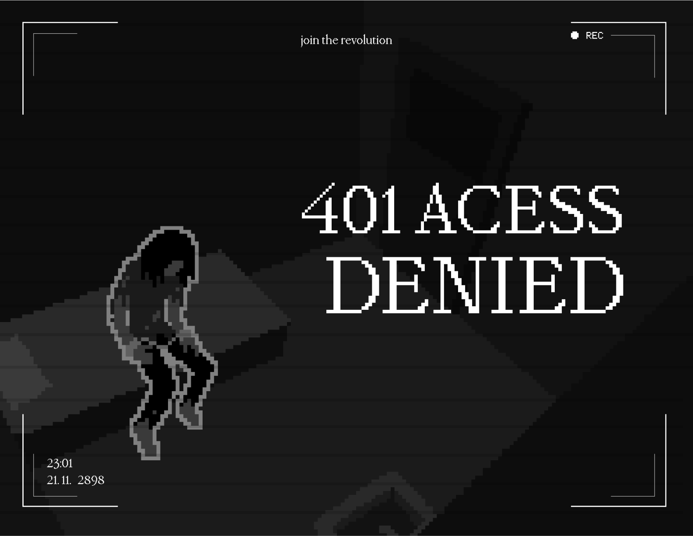
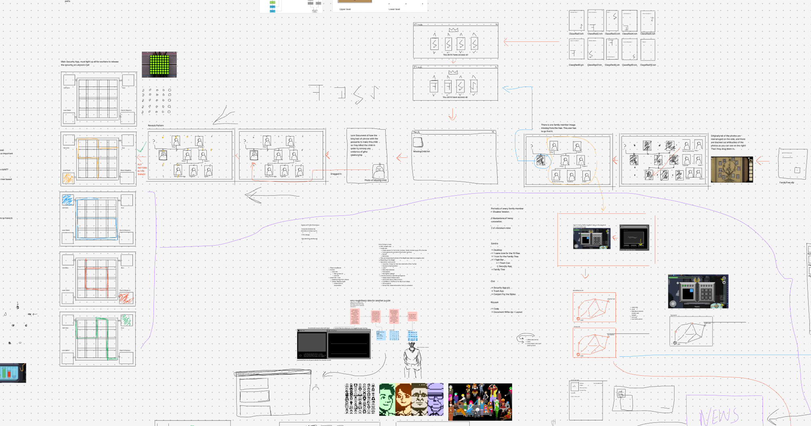
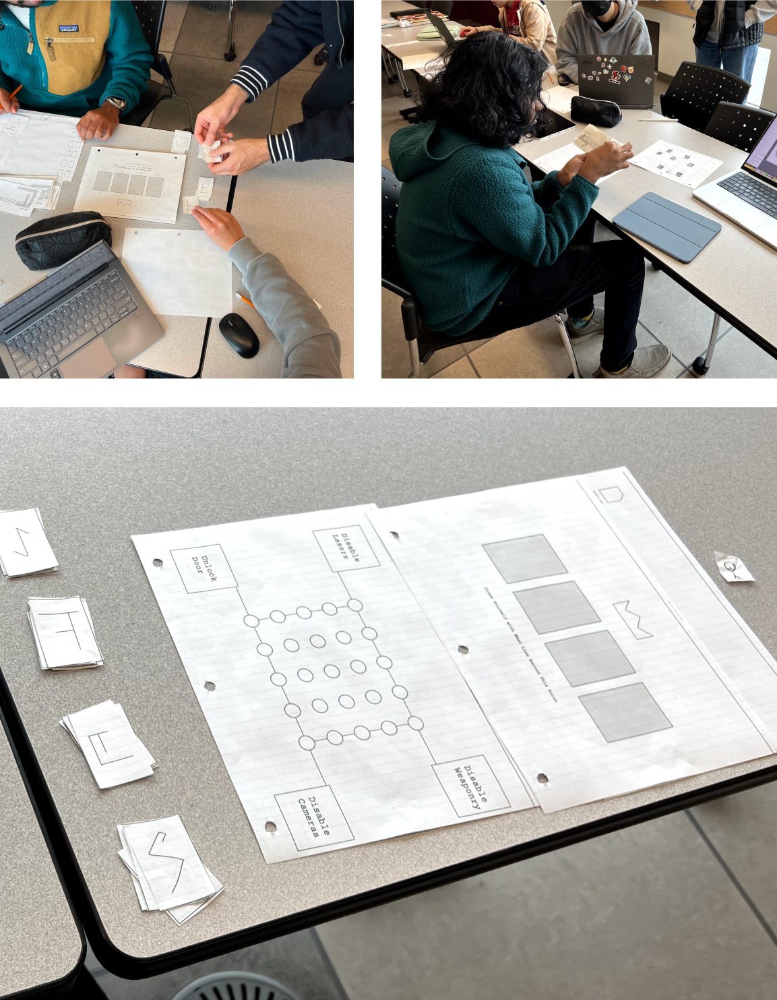
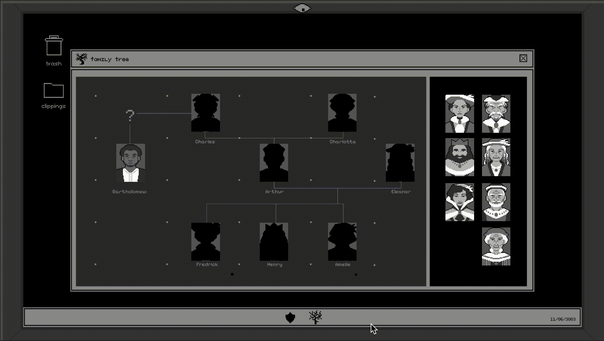
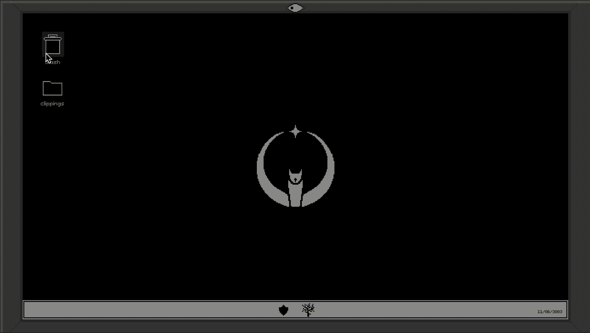
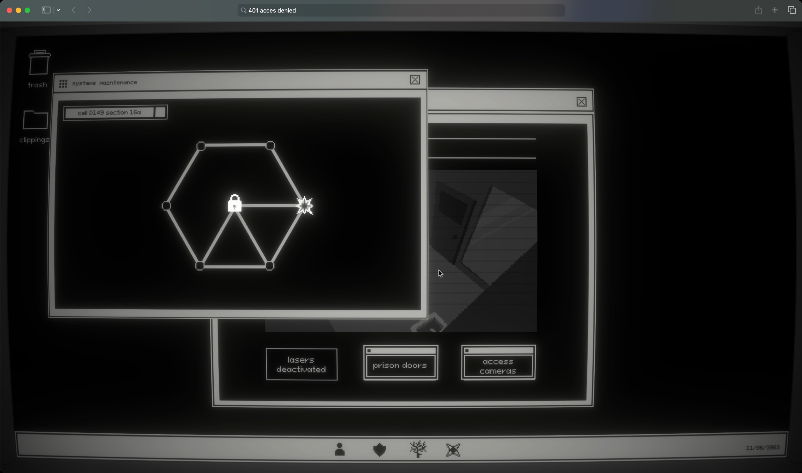
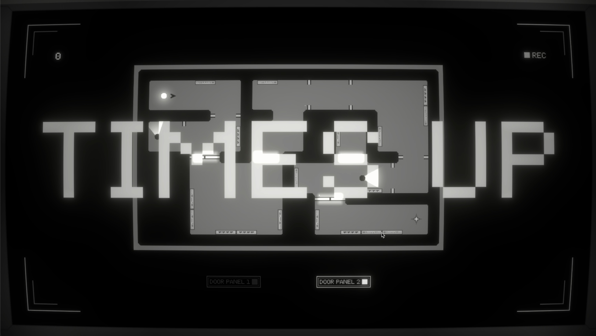
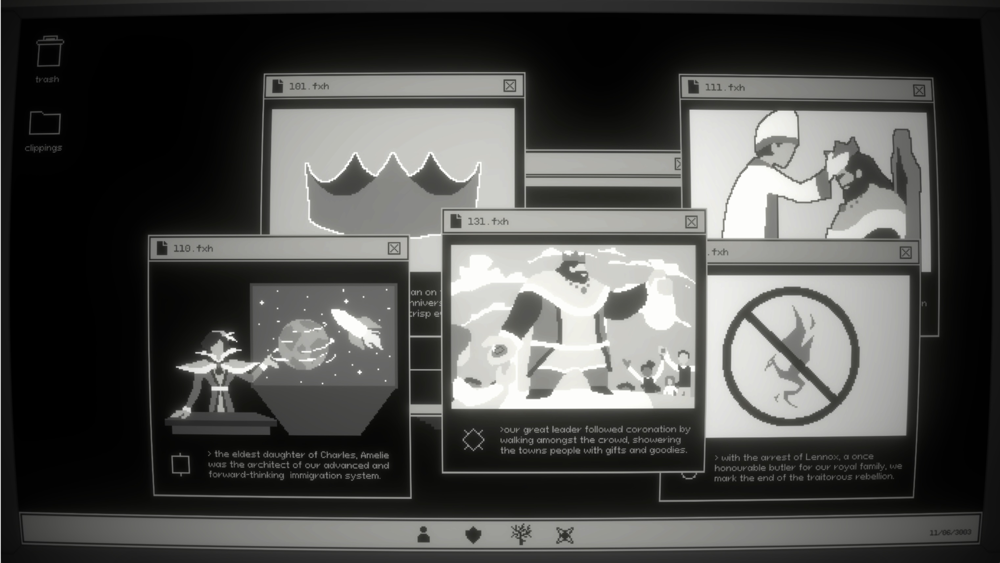

401 Access Denied
Using the Unity platform, I was responsible for coding and designing parts of this escape room style game. I also conducted user research using physical paper prototyping. In 401 Access Denied, you play as the last hope to save the rebellion from an opressive feudal regime.
Context
Creating a Fun Digital Escape Room

Poster by the UI and Graphic Designer for this Project Sandra Cao
About 401 Access Denied
401 Access Denied is an interactive digital escape room game set in the world of New Fairfax; a dystopian future where feudalism once again holds strong. With the Rebellion's leader, Lennox, imprisoned by the government, you are the last hope to free New Fairfax.
Design Challenge
How do we create a challenging, but engaging digital escape room game while employing a strong narrative?
Research & Puzzle Design
One Puzzle Leads to Another
Creating a Game Flow
Using existing puzzle games as inspiration, me and my co game designer, Jaden Zhan, created a flow for the game. We made sure to create a tiered system where although the game centres around a core goal of helping Lennox escape, from prison there are micro tasks that all culminate in opening the final door.

A zoomed out look at the puzzle/game flow we made.
Prototyping Round 1: Paper
To gather use feedback in a short period of time, I created a quick paper protoype of the game. Since our game was primarily based on interaction with UI windows, I printed out mockups and allowed the testers to "press" the paper buttons.

Users interacting with the paper prototype of the game during the first round of testing.
Key Takeaway
Simplify our puzzles by adding more visual cues as opposed to relying on text.
Prototyping Round 2: Unity
As I began to code the game, I built the most simple interactions first using Object Oriented Programming techniques. As feautres continued to be added, I brought in testers to try out the progress.


Two of the original game puzzles created as prototypes for round two of testing.
Key Takeaway
Allow window dragging and slightly limit access to certain objects to prevent endless exploration.
Development
Too Many Hours on Unity
Employing the UI System
Unity has a built in UI system making it easier to code windows and create functions such as draggability. Although initially it was easier, it became tricky when I had to mesh the system with my own puzzle system.

Final Game
401 Access Denied Overview
Video Walkthrough



Stills from the final game
Reflection
Research Drives Functionality
When it came to designing the interactions of the user interface for the game, the research was invaluable since it helped us understand how the players would actaully use it. Based on the data we could refine the interace to their needs.